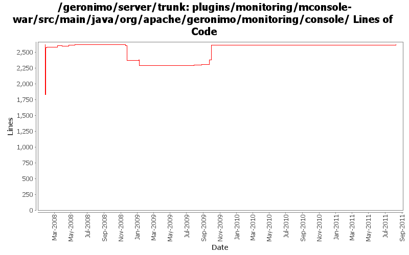

[root]/plugins/monitoring/mconsole-war/src/main/java/org/apache/geronimo/monitoring/console
 data
(3 files, 524 lines)
data
(3 files, 524 lines)
 util
(1 files, 175 lines)
util
(1 files, 175 lines)

| Author | Changes | Lines of Code | Lines per Change |
|---|---|---|---|
| Totals | 60 (100.0%) | 2324 (100.0%) | 38.7 |
| ecraig | 21 (35.0%) | 899 (38.7%) | 42.8 |
| djencks | 9 (15.0%) | 858 (36.9%) | 95.3 |
| xuhaihong | 6 (10.0%) | 273 (11.7%) | 45.5 |
| dwoods | 4 (6.7%) | 121 (5.2%) | 30.2 |
| genspring | 8 (13.3%) | 60 (2.6%) | 7.5 |
| jbohn | 3 (5.0%) | 51 (2.2%) | 17.0 |
| rwonly | 4 (6.7%) | 32 (1.4%) | 8.0 |
| viet | 3 (5.0%) | 28 (1.2%) | 9.3 |
| kevan | 2 (3.3%) | 2 (0.1%) | 1.0 |
GERONIMO-6096 OpenJPA related error pops up when add two servers which just protocol different in Monitoring porlet on admin console (thanks Fang shenghao for the patch)
5 lines of code changed in 1 file:
GERONIMO-6095 Info displayed incomplete of Default Server in Monitoring on admin console (thanks Fang shenghao for the patch!)
1 lines of code changed in 1 file:
GERONIMO-6076 Graphics cannot be displayed on monitoring porlet. Patch from Yi Xiao.
1 lines of code changed in 1 file:
GERONIMO-5599 Reenable monitoring admin console portlets, Patch from Shenghao Fang.
1 lines of code changed in 1 file:
GERONIMO-5674 Dojo related improvement. Patch from Xiao Yi to replace the full dojo with a customized dojo.
1, DojoHowToCompress/**/* files are the build script to build geronimo customized dojo.
2, dojo/**/* files are the customized dojo files for geronimo.
3, dojo-tomcat and dojo-jetty modules are removed.
4, customized dojo files are put into console-portal-driver webapp so that other jsp can reference the dojo
files with /console/dojo/xxx
5, also updated all dojo references in all jsps to the new dojo location.
1 lines of code changed in 1 file:
GERONIMO-5057 Use those xmlbeans generated by JAVA EE 6 schema files
1 lines of code changed in 1 file:
GERONIMO-4810 Predefine a "localhost" server with some predefined graphs and views (Patch from Vanessa)
239 lines of code changed in 1 file:
GERONIMO-4890 The graphs still can be seen under the view when I disable the server (Patch from Siqi Du)
2 lines of code changed in 1 file:
GERONIMO-4823 role-based administration capabilities
12 lines of code changed in 1 file:
GERONIMO-4863 no other graphs can be chosen when I click "Modify this view" of a view (patch from Siqi Du)
24 lines of code changed in 1 file:
GERONIMO-4849 Such warning will be shown after deleted a remote monitoring server via JMX, Thanks Siqi for the patch !
44 lines of code changed in 3 files:
GERONIMO-4854 The protocol option will be reset after testing connection when addint server. Patch from Du Siqi
1 lines of code changed in 1 file:
GERONIMO-4816 Handle the scenario of deleting an invalid server
9 lines of code changed in 1 file:
GERONIMO-4816 Status of monitoring servers will remain the same as previous when recreated
16 lines of code changed in 1 file:
GERONIMO-4732 click monitoring and delete the server localhost and there is an Error rendering portlet.(Patch from Rex Wang)
7 lines of code changed in 1 file:
GERONIMO-4633 extra semicolon in code Thanks Shawn for the patch!
1 lines of code changed in 1 file:
GERONIMO-4597 Validate Web Admin Console input - fixes for CVE-2008-5518, CVE-2009-0038, and CVE-2009-0039
3 lines of code changed in 1 file:
GERONIMO-4507 Admin console should honor the priority of user agent's language setting - patch by Gang Yin
42 lines of code changed in 1 file:
do not echo back passwords to user when they are not necessary
6 lines of code changed in 1 file:
GERONIMO-4484 Extraction, localization and display of messages generated in portlets. Applied common-message_fix.patch from Gang Yin.
42 lines of code changed in 1 file:
GERONIMO-4484 Extraction, localization and display of messages generated in portlets. Applied common-message-monotor.patch from Gang Yin.
76 lines of code changed in 1 file:
GERONIMO-4480 Trying to view a graph in the Monitoring portlet results in a NPE. Patch provided by Shawn Jiang (genspring).
3 lines of code changed in 2 files:
GERONIMO-4415 use jpa for data access in monitoring console
684 lines of code changed in 5 files:
GERONIMO-4415 start of code cleanup and use of jpa in console. Also add a server assembly for testing
174 lines of code changed in 4 files:
Fix for Geronimo-3996. Ensure that there are no null rendered params.
6 lines of code changed in 1 file:
GERONIMO-3972
Monitering Graphics failed to represent in IE 6 SP2
24 lines of code changed in 1 file:
GERONIMO-3950
Mconsole - Change graphs to display mildly curved as they did in first iteration
Made changes necessary to utilize new functionality in Dojo 1.1.0
2 lines of code changed in 1 file:
GERONIMO-3937
java.lang.ArithmeticException: / by zero
Modified console to prevent passing of 0 in request
8 lines of code changed in 1 file:
Fix for geronimo-3833. Filter the mbean name by using the mbean server instead of iterating through all mbean names to find the match.
1 lines of code changed in 1 file:
Fix for geronimo-3833. Dynamically fetching the mbean name instead of hardcoding it.
21 lines of code changed in 1 file:
GERONIMO-3833
Removed hard coded paths from .sql file in monitoring console
1 lines of code changed in 1 file:
Added error checking to prevent user from inadvertently entering 'edit' mode in the portlet causing a bomb.
3 lines of code changed in 1 file:
GERONIMO-3633
Monitoring client should auto redraw graphs/the page on any page that has graphs
GERONIMO-3818
Monitoring console should open individual graphs in actual new window rather than tabs in firefox
GERONIMO-3817
mconsole should display axis labels
36 lines of code changed in 3 files:
GERONIMO-3810
Changed monitoring agent-jmx and mconsole such that while the thread shutdown is pending, the user is aware of it
11 lines of code changed in 1 file:
GERONIMO-3804
monitoring pluging: mconsole-graphs does not detect any servers that was connected through jmx
1 lines of code changed in 1 file:
GERONIMO-3803
monitoring plugin: agent-jmx does not provide the correct interface for mconsole
Patch by Viet Nguyen
5 lines of code changed in 1 file:
GERONIMO-1761 move geronimo-util to geronimo-crypto. Still pending mv of one test directory that svn wouldn't let me move
2 lines of code changed in 2 files:
GERONIMO-3730
monitoring plugin to support jmx connections in mconsole
Added base methods and such for JMX connections from client side
EJB still works flawlessly after these changes, some quirks with JMX still to be hammered out
808 lines of code changed in 4 files:
GERONIMO-3730
monitoring plugin to support jmx connections in mconsole
Implemented UI elements to select connection method
Renamed current mrcconnector class to mrcconnectorejb, in order to add mrcconnectorjmx
added protocol field to database schema
added checks for connection type in monitoring portlet
0 lines of code changed in 6 files: